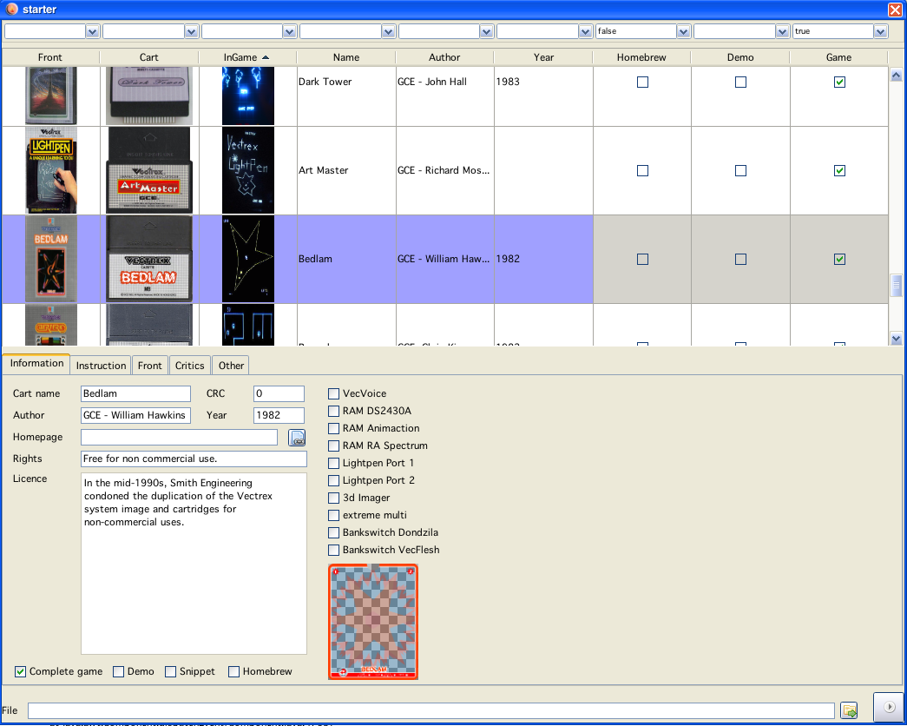

Starter window
Here all configured cartridge are listed (along with their properties). The starter is split into two halfes, the upper part a list of all "games", and the lower half an information panel. The list has some "excel-qualities" you can filter/sort the list right mouseclick for a popup with other configurations and even export it to excel (or whatever your favourite table application may be).
A double click on a table entry starts the rom image behind the entry (or initiates a download first).